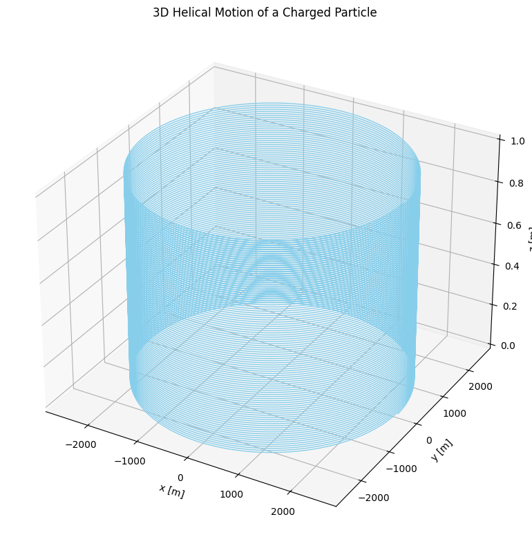

Problem 1
Simulating the Effects of the Lorentz Force
Motivation
The Lorentz force governs the motion of charged particles in electric and magnetic fields and is given by:
This fundamental law plays a key role in many scientific and engineering systems such as: - Particle Accelerators: Controlling charged particle beams. - Mass Spectrometers: Differentiating ions by their mass-to-charge ratio. - Plasma Confinement: Magnetic fields confine plasma in fusion devices like tokamaks. - Astrophysics: Governing charged particle motion in space plasmas.
1. Exploration of Applications
Systems Where Lorentz Force is Key:
- Cyclotrons & Synchrotrons: Magnetic fields bend particle paths to allow acceleration in circular motion.
- Mass Spectrometers: Particles experience force based on \(\mathbf{v} \times \mathbf{B}\), revealing mass-to-charge ratios.
- Plasma Confinement Devices: Magnetic fields restrict charged particles to follow helical paths.
Roles of \(\mathbf{E}\) and \(\mathbf{B}\):
- Electric Field (\(\mathbf{E}\)): Accelerates or decelerates particles linearly.
- Magnetic Field (\(\mathbf{B}\)): Alters trajectory through circular or helical motion; does no work but redirects.
2. Simulating Particle Motion
We'll solve the equations of motion using numerical methods like the Euler or Runge-Kutta 4th order method.
Equations of Motion:
Given: - Charge \(q\) - Mass \(m\) - Position \(\mathbf{r}\) - Velocity \(\mathbf{v}\) - Fields \(\mathbf{E}\) and \(\mathbf{B}\)
Acceleration: $$ \mathbf{a} = \frac{q}{m}(\mathbf{E} + \mathbf{v} \times \mathbf{B}) $$
Scenarios:
- Uniform Magnetic Field Only: Circular motion (Larmor motion).
- Uniform Electric + Magnetic Fields: Helical motion.
- Crossed Fields (\(\mathbf{E} \perp \mathbf{B}\)): Drift motion.
3. Parameter Exploration
We allow users to modify: - \(E\), \(B\) field strengths and directions. - Initial velocity \(\mathbf{v_0}\). - Particle charge \(q\) and mass \(m\).
We observe: - Larmor radius: $$ R = \frac{mv}{|qB|} $$ - Cyclotron frequency: $$ \omega = \frac{|q|B}{m} $$ - Drift velocity in crossed fields: $$ \mathbf{v_d} = \frac{\mathbf{E} \times \mathbf{B}}{B^2} $$
collab: https://colab.research.google.com/drive/1r45nz584tcUKeJidLn8081UvAaX9KRKI

Simulating the Effects of the Lorentz Force
Motivation
The Lorentz force governs the motion of charged particles in electric and magnetic fields and is given by:
This fundamental law plays a key role in many scientific and engineering systems such as: - Particle Accelerators: Controlling charged particle beams. - Mass Spectrometers: Differentiating ions by their mass-to-charge ratio. - Plasma Confinement: Magnetic fields confine plasma in fusion devices like tokamaks. - Astrophysics: Governing charged particle motion in space plasmas.
Simulating the Effects of the Lorentz Force
Motivation
The Lorentz force is defined as:
It determines the motion of charged particles in electric and magnetic fields, essential in systems like particle accelerators, mass spectrometers, and plasma confinement.
1. Key Applications
- Cyclotrons: Circular motion from magnetic fields.
- Mass Spectrometers: Ion separation via \(\mathbf{v} \times \mathbf{B}\).
- Tokamaks: Helical particle confinement.
2. Simulation Approach
Using numerical integration (Euler or Runge-Kutta), we solve:
Scenarios: - Uniform \(\mathbf{B}\): circular motion. - Uniform \(\mathbf{E}\) and \(\mathbf{B}\): helical motion. - Crossed fields: drift motion.
3. Parameter Effects
- Larmor Radius: \(R = \frac{mv}{|qB|}\)
- Cyclotron Frequency: \(\omega = \frac{|q|B}{m}\)
- Drift Velocity: \(\mathbf{v_d} = \frac{\mathbf{E} \times \mathbf{B}}{B^2}\)